Physics Homework 7 Capacitors and dielectrics · Worked solutions
All 8 assigned questions. Setup, substitution and final answers.
24.7 24.8 24.12 24.14 24.24 24.36 24.66 24.68 Print / Save PDF Question 124.7 · Changing capacitor separation Air capacitor: Q = 240 pC, V = 42.0 V, plate area A = 6.80 cm². Find gap d, then voltage for the same Q if d doubles.
Original question Open the original D2L handout 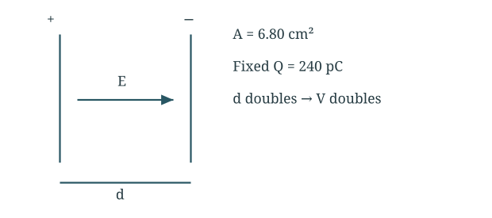
At fixed charge, doubling separation halves capacitance.
Find the initial gap C = Q V = 240 × 10 − 12 42.0 = 5.714 × 10 − 12 F d = ε 0 A C = ( 8.854 × 10 − 12 ) ( 6.80 × 10 − 4 ) 5.714 × 10 − 12 d = 1.05 × 10 − 3 m = 1.05 m m \begin{gathered}C=\frac QV=\frac{240\times10^{-12}}{42.0}=5.714\times10^{-12}\ \mathrm F\\d=\frac{\varepsilon_0A}{C}=\frac{(8.854\times10^{-12})(6.80\times10^{-4})}{5.714\times10^{-12}}\\d=1.05\times10^{-3}\ \mathrm m=1.05\ \mathrm{mm}\end{gathered} C = V Q = 42.0 240 × 1 0 − 12 = 5.714 × 1 0 − 12 F d = C ε 0 A = 5.714 × 1 0 − 12 ( 8.854 × 1 0 − 12 ) ( 6.80 × 1 0 − 4 ) d = 1.05 × 1 0 − 3 m = 1.05 mm Double the gap at fixed charge C ′ = ε 0 A 2 d = C 2 V ′ = Q C ′ = 2 Q C = 2 ( 42.0 ) = 84.0 V \begin{gathered}C'=\frac{\varepsilon_0A}{2d}=\frac C2\\V'=\frac Q{C'}=2\frac QC=2(42.0)=84.0\ \mathrm V\end{gathered} C ′ = 2 d ε 0 A = 2 C V ′ = C ′ Q = 2 C Q = 2 ( 42.0 ) = 84.0 V Final answer d = 1.05 mm; new voltage 84.0 V.
The field stays constant because Q/A is unchanged; voltage grows with gap. This question appears in both Homework 6 and 7.
Question 224.8 · Design an air capacitor Circular air capacitor C = 5.00 pF must withstand 100 V while E ≤ 1.00 × 10⁴ N/C. Find minimum gap, minimum plate radius, and maximum charge at 100 V.
Original question 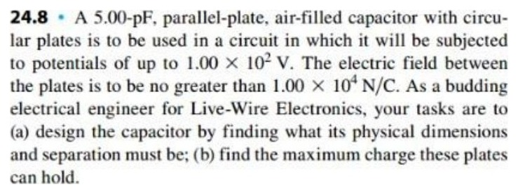
Open the original D2L handout 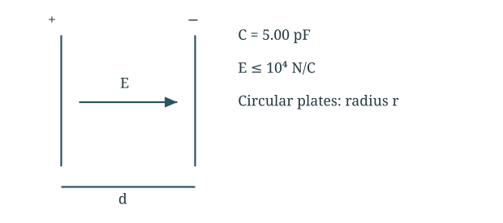
Field limit sets d; required capacitance then sets area.
Use the field limit E = V d ≤ E m a x ⇒ d ≥ V E m a x d m i n = 100 1.00 × 10 4 = 0.0100 m \begin{gathered}E=\frac Vd\le E_{max}\quad\Rightarrow\quad d\ge\frac V{E_{max}}\\d_{min}=\frac{100}{1.00\times10^4}=0.0100\ \mathrm m\end{gathered} E = d V ≤ E ma x ⇒ d ≥ E ma x V d min = 1.00 × 1 0 4 100 = 0.0100 m Find the minimum radius C = ε 0 π r 2 d r m i n = C d m i n π ε 0 = ( 5.00 × 10 − 12 ) ( 0.0100 ) π ( 8.854 × 10 − 12 ) r m i n = 0.0424 m = 4.24 c m \begin{gathered}C=\frac{\varepsilon_0\pi r^2}{d}\\r_{min}=\sqrt{\frac{Cd_{min}}{\pi\varepsilon_0}}=\sqrt{\frac{(5.00\times10^{-12})(0.0100)}{\pi(8.854\times10^{-12})}}\\r_{min}=0.0424\ \mathrm m=4.24\ \mathrm{cm}\end{gathered} C = d ε 0 π r 2 r min = π ε 0 C d min = π ( 8.854 × 1 0 − 12 ) ( 5.00 × 1 0 − 12 ) ( 0.0100 ) r min = 0.0424 m = 4.24 cm Find the charge at 100 V Q m a x = C V = ( 5.00 × 10 − 12 ) ( 100 ) = 5.00 × 10 − 10 C \begin{gathered}Q_{max}=CV=(5.00\times10^{-12})(100)=5.00\times10^{-10}\ \mathrm C\end{gathered} Q ma x = C V = ( 5.00 × 1 0 − 12 ) ( 100 ) = 5.00 × 1 0 − 10 C Final answer 10.0 mm gap; 4.24 cm radius; 500 pC.
Increasing d beyond its minimum requires larger plates to preserve C.
Question 324.12 · Cylindrical capacitor Coaxial air capacitor: inner radius a = 2.20 mm, outer inner radius b = 3.50 mm, length L = 2.80 m. Inner conductor is 0.350 V higher. Find capacitance per length and charge on each conductor.
Original question 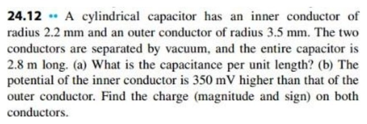
Open the original D2L handout 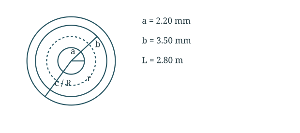
Integrate the radial field between coaxial conductors.
Find capacitance per length V = ∫ a b λ 2 π ε 0 r d r = λ 2 π ε 0 ln b a C L = λ V = 2 π ε 0 ln ( b / a ) = 2 π ( 8.854 × 10 − 12 ) ln ( 3.50 / 2.20 ) = 1.20 × 10 − 10 F / m \begin{gathered}V=\int_a^b\frac{\lambda}{2\pi\varepsilon_0r}\,dr=\frac{\lambda}{2\pi\varepsilon_0}\ln\frac ba\\\frac CL=\frac{\lambda}{V}=\frac{2\pi\varepsilon_0}{\ln(b/a)}\\=\frac{2\pi(8.854\times10^{-12})}{\ln(3.50/2.20)}=1.20\times10^{-10}\ \mathrm{F/m}\end{gathered} V = ∫ a b 2 π ε 0 r λ d r = 2 π ε 0 λ ln a b L C = V λ = ln ( b / a ) 2 π ε 0 = ln ( 3.50/2.20 ) 2 π ( 8.854 × 1 0 − 12 ) = 1.20 × 1 0 − 10 F/m Find the conductor charges Q = ( C L ) L V = ( 1.198 × 10 − 10 ) ( 2.80 ) ( 0.350 ) Q = 1.17 × 10 − 10 C Q i n n e r = + 117 p C , Q o u t e r = − 117 p C \begin{gathered}Q=\left(\frac CL\right)LV=(1.198\times10^{-10})(2.80)(0.350)\\Q=1.17\times10^{-10}\ \mathrm C\\Q_{inner}=+117\ \mathrm{pC},\quad Q_{outer}=-117\ \mathrm{pC}\end{gathered} Q = ( L C ) L V = ( 1.198 × 1 0 − 10 ) ( 2.80 ) ( 0.350 ) Q = 1.17 × 1 0 − 10 C Q inn er = + 117 pC , Q o u t er = − 117 pC Final answer 120 pF/m; inner +117 pC, outer −117 pC.
The inner conductor is positive and the outer negative; use the inner surface radius of the outer cylinder.
Question 424.14 · Series and parallel capacitors Network A—10 µF—(5 µF in parallel with 8 µF)—9 µF—B; Vₐᵦ = 50.0 V. Find equivalent capacitance, total stored plate charge, and charges on the 10 and 9 µF capacitors.
Original question 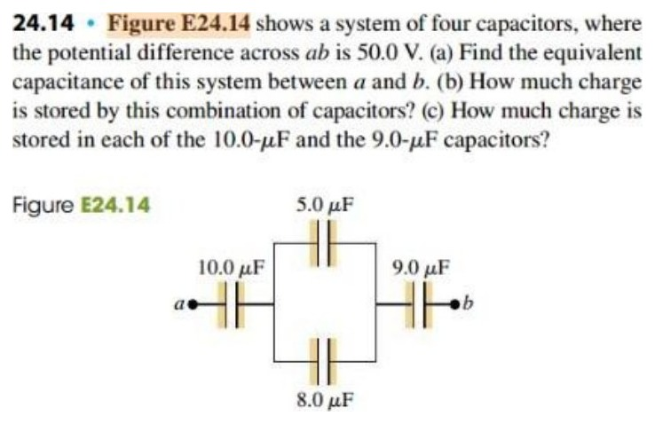
Open the original D2L handout 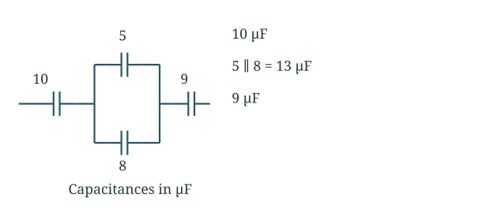
Combine the middle parallel group before the series chain.
Combine the capacitances C p = 5 + 8 = 13 μ F 1 C e q = 1 10 + 1 13 + 1 9 ( μ F ) − 1 C e q = 3.4718 μ F \begin{gathered}C_p=5+8=13\ \mu\mathrm F\\\frac1{C_{eq}}=\frac1{10}+\frac1{13}+\frac19\quad(\mu\mathrm F)^{-1}\\C_{eq}=3.4718\ \mu\mathrm F\end{gathered} C p = 5 + 8 = 13 μ F C e q 1 = 10 1 + 13 1 + 9 1 ( μ F ) − 1 C e q = 3.4718 μ F Find the series charge Q = C e q V = ( 3.4718 μ F ) ( 50.0 V ) = 173.59 μ C Q 10 = Q 9 = Q = 174 μ C \begin{gathered}Q=C_{eq}V=(3.4718\ \mu\mathrm F)(50.0\ \mathrm V)=173.59\ \mu\mathrm C\\Q_{10}=Q_9=Q=174\ \mu\mathrm C\end{gathered} Q = C e q V = ( 3.4718 μ F ) ( 50.0 V ) = 173.59 μ C Q 10 = Q 9 = Q = 174 μ C Final answer Ceq = 3.47 µF; total, Q₁₀ and Q₉ = 174 µC each.
The 5 and 8 µF branch charges add to the series charge; they are not individually equal to it.
Question 524.24 · Work pulling plates apart Isolated capacitor C = 920 pF carries Q = 3.90 µC. Double the gap, keeping Q constant. Find original and final voltages and external work.
Original question 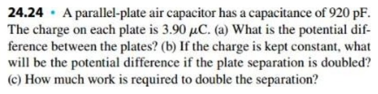
Open the original D2L handout 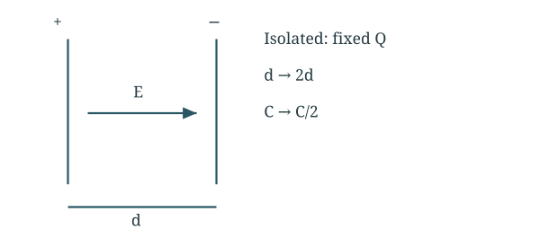
Use U = Q²/(2C), since charge is fixed.
Find the two voltages V i = Q C = 3.90 × 10 − 6 920 × 10 − 12 = 4.24 × 10 3 V C f = C i / 2 , V f = Q / C f = 2 V i = 8.48 × 10 3 V \begin{gathered}V_i=\frac QC=\frac{3.90\times10^{-6}}{920\times10^{-12}}=4.24\times10^3\ \mathrm V\\C_f=C_i/2,\quad V_f=Q/C_f=2V_i=8.48\times10^3\ \mathrm V\end{gathered} V i = C Q = 920 × 1 0 − 12 3.90 × 1 0 − 6 = 4.24 × 1 0 3 V C f = C i /2 , V f = Q / C f = 2 V i = 8.48 × 1 0 3 V Find the work required U i = Q 2 2 C i , U f = Q 2 2 ( C i / 2 ) = 2 U i W e x t = U f − U i = ( 3.90 × 10 − 6 ) 2 2 ( 920 × 10 − 12 ) W e x t = 8.27 × 10 − 3 J \begin{gathered}U_i=\frac{Q^2}{2C_i},\quad U_f=\frac{Q^2}{2(C_i/2)}=2U_i\\W_{ext}=U_f-U_i=\frac{(3.90\times10^{-6})^2}{2(920\times10^{-12})}\\W_{ext}=8.27\times10^{-3}\ \mathrm J\end{gathered} U i = 2 C i Q 2 , U f = 2 ( C i /2 ) Q 2 = 2 U i W e x t = U f − U i = 2 ( 920 × 1 0 − 12 ) ( 3.90 × 1 0 − 6 ) 2 W e x t = 8.27 × 1 0 − 3 J Final answer 4.24 kV → 8.48 kV; external work 8.27 mJ.
Positive work separates attracting plates; the energy doubles.
Question 624.36 · Build a paper capacitor Target C = 1.00 nF. Paper κ = 3.0, sheet thickness 0.20 mm, plate dimensions 22 cm × 28 cm. Posterboard has thickness 12 mm and the same κ. Find the number of paper sheets, the required posterboard plate area, and whether replacing that posterboard with Teflon of the same thickness requires larger or smaller plates.
Original question 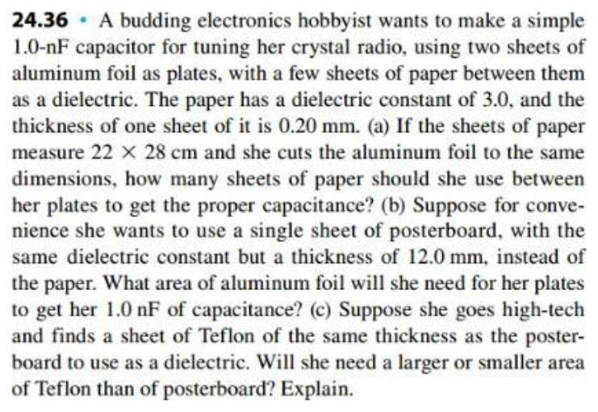
Open the original D2L handout 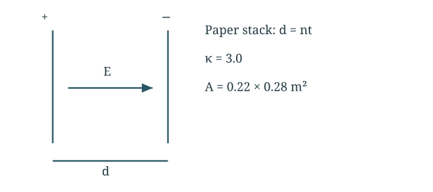
Stacked paper increases dielectric thickness; use C = κε₀A/d.
Count the paper sheets A = ( 0.22 ) ( 0.28 ) = 0.0616 m 2 , d = n t C = κ ε 0 A n t ⇒ n = κ ε 0 A C t n = 3.0 ( 8.854 × 10 − 12 ) ( 0.0616 ) ( 1.00 × 10 − 9 ) ( 0.20 × 10 − 3 ) = 8.18 \begin{gathered}A=(0.22)(0.28)=0.0616\ \mathrm{m^2},\quad d=nt\\C=\frac{\kappa\varepsilon_0 A}{nt}\quad\Rightarrow\quad n=\frac{\kappa\varepsilon_0 A}{Ct}\\n=\frac{3.0(8.854\times10^{-12})(0.0616)}{(1.00\times10^{-9})(0.20\times10^{-3})}=8.18\end{gathered} A = ( 0.22 ) ( 0.28 ) = 0.0616 m 2 , d = n t C = n t κ ε 0 A ⇒ n = C t κ ε 0 A n = ( 1.00 × 1 0 − 9 ) ( 0.20 × 1 0 − 3 ) 3.0 ( 8.854 × 1 0 − 12 ) ( 0.0616 ) = 8.18 Find the posterboard area A = C d κ ε 0 = ( 1.00 × 10 − 9 ) ( 0.0120 ) 3.0 ( 8.854 × 10 − 12 ) A = 0.452 m 2 \begin{gathered}A=\frac{Cd}{\kappa\varepsilon_0}=\frac{(1.00\times10^{-9})(0.0120)}{3.0(8.854\times10^{-12})}\\A=0.452\ \mathrm{m^2}\end{gathered} A = κ ε 0 C d = 3.0 ( 8.854 × 1 0 − 12 ) ( 1.00 × 1 0 − 9 ) ( 0.0120 ) A = 0.452 m 2 Compare Teflon A = C d κ ε 0 ⇒ A ∝ 1 κ \begin{gathered}A=\frac{Cd}{\kappa\varepsilon_0}\quad\Rightarrow\quad A\propto\frac1\kappa\end{gathered} A = κ ε 0 C d ⇒ A ∝ κ 1 Use about eight sheets. Teflon has a smaller dielectric constant than the posterboard, so it needs a larger plate area.
Final answer About 8 sheets; posterboard area 0.452 m²; Teflon needs more area.
An integer number of sheets gives an approximate target. For the same thickness and capacitance, lower κ requires larger area.
Question 724.66 · Half-filled dielectric capacitor Square plates 0.120 m on a side, gap d = 4.50 mm; half the area contains Plexiglas κ = 3.40 and half air. Battery stays connected at 18.0 V. Find C, stored energy, and energy after removing the dielectric.
Original question 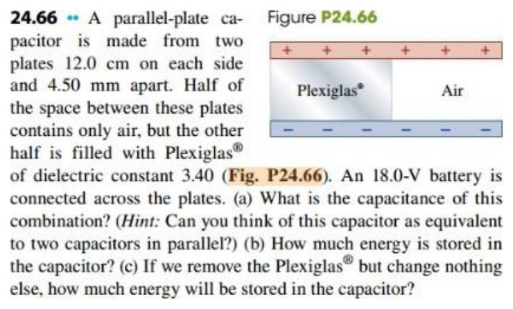
Open the original D2L handout 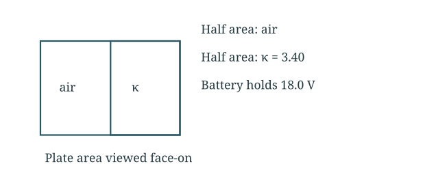
Side-by-side areas are parallel capacitors at the same voltage.
Add the two parallel sections A = ( 0.120 ) 2 = 0.0144 m 2 C = C a i r + C p l a s t i c = ε 0 ( A / 2 ) d + κ ε 0 ( A / 2 ) d C = ( 8.854 × 10 − 12 ) ( 0.0144 ) ( 1 + 3.40 ) 2 ( 0.00450 ) C = 6.23 × 10 − 11 F = 62.3 p F \begin{gathered}A=(0.120)^2=0.0144\ \mathrm{m^2}\\C=C_{air}+C_{plastic}=\frac{\varepsilon_0(A/2)}d+\frac{\kappa\varepsilon_0(A/2)}d\\C=\frac{(8.854\times10^{-12})(0.0144)(1+3.40)}{2(0.00450)}\\C=6.23\times10^{-11}\ \mathrm F=62.3\ \mathrm{pF}\end{gathered} A = ( 0.120 ) 2 = 0.0144 m 2 C = C ai r + C pl a s t i c = d ε 0 ( A /2 ) + d κ ε 0 ( A /2 ) C = 2 ( 0.00450 ) ( 8.854 × 1 0 − 12 ) ( 0.0144 ) ( 1 + 3.40 ) C = 6.23 × 1 0 − 11 F = 62.3 pF Find the initial energy U = 1 2 C V 2 = 1 2 ( 6.233 × 10 − 11 ) ( 18.0 ) 2 U = 1.01 × 10 − 8 J \begin{gathered}U=\frac12CV^2=\frac12(6.233\times10^{-11})(18.0)^2\\U=1.01\times10^{-8}\ \mathrm J\end{gathered} U = 2 1 C V 2 = 2 1 ( 6.233 × 1 0 − 11 ) ( 18.0 ) 2 U = 1.01 × 1 0 − 8 J Remove the plastic with the battery connected C 0 = ε 0 A d = ( 8.854 × 10 − 12 ) ( 0.0144 ) 0.00450 = 2.833 × 10 − 11 F U 0 = 1 2 C 0 V 2 = 1 2 ( 2.833 × 10 − 11 ) ( 18.0 ) 2 U 0 = 4.59 × 10 − 9 J \begin{gathered}C_0=\frac{\varepsilon_0 A}d=\frac{(8.854\times10^{-12})(0.0144)}{0.00450}=2.833\times10^{-11}\ \mathrm F\\U_0=\frac12C_0V^2=\frac12(2.833\times10^{-11})(18.0)^2\\U_0=4.59\times10^{-9}\ \mathrm J\end{gathered} C 0 = d ε 0 A = 0.00450 ( 8.854 × 1 0 − 12 ) ( 0.0144 ) = 2.833 × 1 0 − 11 F U 0 = 2 1 C 0 V 2 = 2 1 ( 2.833 × 1 0 − 11 ) ( 18.0 ) 2 U 0 = 4.59 × 1 0 − 9 J Final answer 62.3 pF; 10.1 nJ initially; 4.59 nJ after removal.
The battery fixes voltage, not charge. Using a series-dielectric formula would describe a different geometry.
Question 824.68 · Capacitive fuel gauge Vertical plates have width w, height L and gap d. Fuel fills height h; air above it. κ = 1.95 for gasoline or 33.0 for methanol. Derive effective dielectric constant; evaluate quarter, half and three-quarter full; compare sensitivity.
Original question 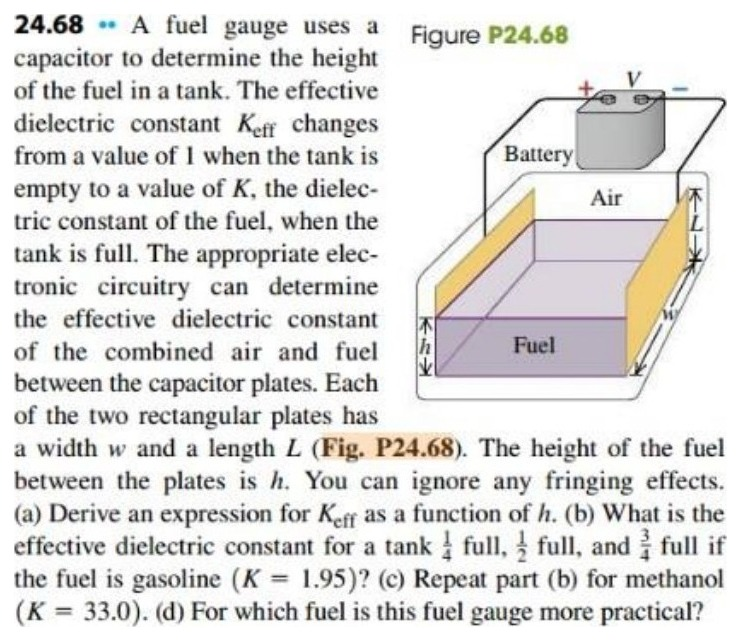
Open the original D2L handout 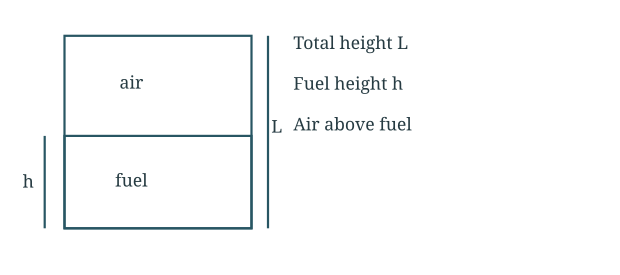
Fuel and air areas contribute in parallel.
Add fuel and air sections C = ε 0 w ( L − h ) d + κ ε 0 w h d C = ε 0 w L d [ 1 + ( κ − 1 ) h L ] κ e f f = 1 + ( κ − 1 ) h L \begin{gathered}C=\frac{\varepsilon_0w(L-h)}d+\frac{\kappa\varepsilon_0wh}d\\C=\frac{\varepsilon_0wL}d\left[1+(\kappa-1)\frac hL\right]\\\kappa_{eff}=1+(\kappa-1)\frac hL\end{gathered} C = d ε 0 w ( L − h ) + d κ ε 0 w h C = d ε 0 w L [ 1 + ( κ − 1 ) L h ] κ e f f = 1 + ( κ − 1 ) L h Substitute the fill fractions Gasoline: κ e f f = 1 + 0.95 ( h / L ) h / L = 1 4 , 1 2 , 3 4 : 1.2375 , 1.475 , 1.7125 Methanol: κ e f f = 1 + 32 ( h / L ) h / L = 1 4 , 1 2 , 3 4 : 9 , 17 , 25 \begin{gathered}\text{Gasoline: }\kappa_{eff}=1+0.95(h/L)\\h/L=\tfrac14,\tfrac12,\tfrac34:\quad1.2375,\ 1.475,\ 1.7125\\\text{Methanol: }\kappa_{eff}=1+32(h/L)\\h/L=\tfrac14,\tfrac12,\tfrac34:\quad9,\ 17,\ 25\end{gathered} Gasoline: κ e f f = 1 + 0.95 ( h / L ) h / L = 4 1 , 2 1 , 4 3 : 1.2375 , 1.475 , 1.7125 Methanol: κ e f f = 1 + 32 ( h / L ) h / L = 4 1 , 2 1 , 4 3 : 9 , 17 , 25 Final answer κeff = 1 + (κ − 1)h/L; methanol is more sensitive.
Both are linear in fill height in this ideal model. Methanol gives a larger capacitance change per unit height, making the change easier to resolve.
 Open the original D2L handout
Open the original D2L handout